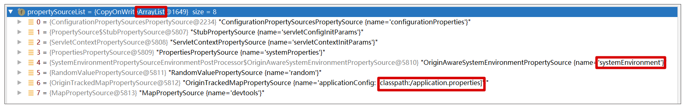
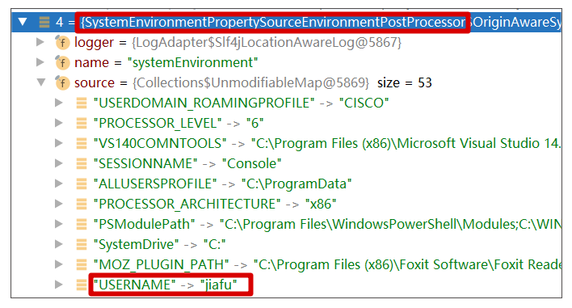

<!DOCTYPE html>

<html xmlns="http://www.w3.org/1999/xhtml">
<head>
<head>
<meta content="text/html; charset=utf-8" http-equiv="Content-Type"/>
<meta content="width=device-width, initial-scale=1, maximum-scale=1.0, user-scalable=no" name="viewport"/>
<meta content="zh-cn" http-equiv="content-language"/>
<meta content="03 Spring Bean 依赖注入常见错误（下）" name="description"/>
<link href="/static/favicon.png" rel="icon"/>
<title>03 Spring Bean 依赖注入常见错误（下） </title>
<link href="/static/index.css" rel="stylesheet"/>
<link href="/static/highlight.min.css" rel="stylesheet"/>
<script src="/static/highlight.min.js"></script>
<meta content="Hexo 4.2.0" name="generator"/>
<script data-website-id="83e5d5db-9d06-40e3-b780-cbae722fdf8c" defer="" src="https://umami.lianglianglee.com/script.js"></script>
</head>
<body>
<div class="book-container">
<div class="book-sidebar">
<div class="book-brand">
<a href="/">

<span>技术文章摘抄</span>
</a>
</div>
<div class="book-menu uncollapsible">
<ul class="uncollapsible">
<li><a class="current-tab" href="/">首页</a></li>
<li><a href="../">上一级</a></li>
</ul>
<ul class="uncollapsible">
<li>
<a class="menu-item" href="/%e4%b8%93%e6%a0%8f/Spring%e7%bc%96%e7%a8%8b%e5%b8%b8%e8%a7%81%e9%94%99%e8%af%af50%e4%be%8b/00%20%e5%af%bc%e8%af%bb%205%e5%88%86%e9%92%9f%e8%bd%bb%e6%9d%be%e4%ba%86%e8%a7%a3Spring%e5%9f%ba%e7%a1%80%e7%9f%a5%e8%af%86.md.html" id="00 导读 5分钟轻松了解Spring基础知识.md.html">00 导读 5分钟轻松了解Spring基础知识.md.html</a>
</li>
<li>
<a class="menu-item" href="/%e4%b8%93%e6%a0%8f/Spring%e7%bc%96%e7%a8%8b%e5%b8%b8%e8%a7%81%e9%94%99%e8%af%af50%e4%be%8b/00%20%e5%bc%80%e7%af%87%e8%af%8d%20%e8%b4%b4%e5%bf%83%e2%80%9c%e4%bf%9d%e5%a7%86%e2%80%9dSpring%e7%bd%a2%e5%b7%a5%e4%ba%86%e6%80%8e%e4%b9%88%e5%8a%9e%ef%bc%9f.md.html" id="00 开篇词 贴心“保姆”Spring罢工了怎么办？.md.html">00 开篇词 贴心“保姆”Spring罢工了怎么办？.md.html</a>
</li>
<li>
<a class="menu-item" href="/%e4%b8%93%e6%a0%8f/Spring%e7%bc%96%e7%a8%8b%e5%b8%b8%e8%a7%81%e9%94%99%e8%af%af50%e4%be%8b/01%20Spring%20Bean%20%e5%ae%9a%e4%b9%89%e5%b8%b8%e8%a7%81%e9%94%99%e8%af%af.md.html" id="01 Spring Bean 定义常见错误.md.html">01 Spring Bean 定义常见错误.md.html</a>
</li>
<li>
<a class="menu-item" href="/%e4%b8%93%e6%a0%8f/Spring%e7%bc%96%e7%a8%8b%e5%b8%b8%e8%a7%81%e9%94%99%e8%af%af50%e4%be%8b/02%20Spring%20Bean%20%e4%be%9d%e8%b5%96%e6%b3%a8%e5%85%a5%e5%b8%b8%e8%a7%81%e9%94%99%e8%af%af%ef%bc%88%e4%b8%8a%ef%bc%89.md.html" id="02 Spring Bean 依赖注入常见错误（上）.md.html">02 Spring Bean 依赖注入常见错误（上）.md.html</a>
</li>
<li>
<a class="menu-item" href="/%e4%b8%93%e6%a0%8f/Spring%e7%bc%96%e7%a8%8b%e5%b8%b8%e8%a7%81%e9%94%99%e8%af%af50%e4%be%8b/03%20Spring%20Bean%20%e4%be%9d%e8%b5%96%e6%b3%a8%e5%85%a5%e5%b8%b8%e8%a7%81%e9%94%99%e8%af%af%ef%bc%88%e4%b8%8b%ef%bc%89.md.html" id="03 Spring Bean 依赖注入常见错误（下）.md.html">03 Spring Bean 依赖注入常见错误（下）.md.html</a>
</li>
<li>
<a class="menu-item" href="/%e4%b8%93%e6%a0%8f/Spring%e7%bc%96%e7%a8%8b%e5%b8%b8%e8%a7%81%e9%94%99%e8%af%af50%e4%be%8b/04%20Spring%20Bean%20%e7%94%9f%e5%91%bd%e5%91%a8%e6%9c%9f%e5%b8%b8%e8%a7%81%e9%94%99%e8%af%af.md.html" id="04 Spring Bean 生命周期常见错误.md.html">04 Spring Bean 生命周期常见错误.md.html</a>
</li>
<li>
<a class="menu-item" href="/%e4%b8%93%e6%a0%8f/Spring%e7%bc%96%e7%a8%8b%e5%b8%b8%e8%a7%81%e9%94%99%e8%af%af50%e4%be%8b/05%20Spring%20AOP%20%e5%b8%b8%e8%a7%81%e9%94%99%e8%af%af%ef%bc%88%e4%b8%8a%ef%bc%89.md.html" id="05 Spring AOP 常见错误（上）.md.html">05 Spring AOP 常见错误（上）.md.html</a>
</li>
<li>
<a class="menu-item" href="/%e4%b8%93%e6%a0%8f/Spring%e7%bc%96%e7%a8%8b%e5%b8%b8%e8%a7%81%e9%94%99%e8%af%af50%e4%be%8b/06%20Spring%20AOP%20%e5%b8%b8%e8%a7%81%e9%94%99%e8%af%af%ef%bc%88%e4%b8%8b%ef%bc%89.md.html" id="06 Spring AOP 常见错误（下）.md.html">06 Spring AOP 常见错误（下）.md.html</a>
</li>
<li>
<a class="menu-item" href="/%e4%b8%93%e6%a0%8f/Spring%e7%bc%96%e7%a8%8b%e5%b8%b8%e8%a7%81%e9%94%99%e8%af%af50%e4%be%8b/07%20Spring%e4%ba%8b%e4%bb%b6%e5%b8%b8%e8%a7%81%e9%94%99%e8%af%af.md.html" id="07 Spring事件常见错误.md.html">07 Spring事件常见错误.md.html</a>
</li>
<li>
<a class="menu-item" href="/%e4%b8%93%e6%a0%8f/Spring%e7%bc%96%e7%a8%8b%e5%b8%b8%e8%a7%81%e9%94%99%e8%af%af50%e4%be%8b/08%20%e7%ad%94%e7%96%91%e7%8e%b0%e5%9c%ba%ef%bc%9aSpring%20Core%20%e7%af%87%e6%80%9d%e8%80%83%e9%a2%98%e5%90%88%e9%9b%86.md.html" id="08 答疑现场：Spring Core 篇思考题合集.md.html">08 答疑现场：Spring Core 篇思考题合集.md.html</a>
</li>
<li>
<a class="menu-item" href="/%e4%b8%93%e6%a0%8f/Spring%e7%bc%96%e7%a8%8b%e5%b8%b8%e8%a7%81%e9%94%99%e8%af%af50%e4%be%8b/09%20Spring%20Web%20URL%20%e8%a7%a3%e6%9e%90%e5%b8%b8%e8%a7%81%e9%94%99%e8%af%af.md.html" id="09 Spring Web URL 解析常见错误.md.html">09 Spring Web URL 解析常见错误.md.html</a>
</li>
<li>
<a class="menu-item" href="/%e4%b8%93%e6%a0%8f/Spring%e7%bc%96%e7%a8%8b%e5%b8%b8%e8%a7%81%e9%94%99%e8%af%af50%e4%be%8b/10%20Spring%20Web%20Header%20%e8%a7%a3%e6%9e%90%e5%b8%b8%e8%a7%81%e9%94%99%e8%af%af.md.html" id="10 Spring Web Header 解析常见错误.md.html">10 Spring Web Header 解析常见错误.md.html</a>
</li>
<li>
<a class="menu-item" href="/%e4%b8%93%e6%a0%8f/Spring%e7%bc%96%e7%a8%8b%e5%b8%b8%e8%a7%81%e9%94%99%e8%af%af50%e4%be%8b/11%20Spring%20Web%20Body%20%e8%bd%ac%e5%8c%96%e5%b8%b8%e8%a7%81%e9%94%99%e8%af%af.md.html" id="11 Spring Web Body 转化常见错误.md.html">11 Spring Web Body 转化常见错误.md.html</a>
</li>
<li>
<a class="menu-item" href="/%e4%b8%93%e6%a0%8f/Spring%e7%bc%96%e7%a8%8b%e5%b8%b8%e8%a7%81%e9%94%99%e8%af%af50%e4%be%8b/12%20Spring%20Web%20%e5%8f%82%e6%95%b0%e9%aa%8c%e8%af%81%e5%b8%b8%e8%a7%81%e9%94%99%e8%af%af.md.html" id="12 Spring Web 参数验证常见错误.md.html">12 Spring Web 参数验证常见错误.md.html</a>
</li>
<li>
<a class="menu-item" href="/%e4%b8%93%e6%a0%8f/Spring%e7%bc%96%e7%a8%8b%e5%b8%b8%e8%a7%81%e9%94%99%e8%af%af50%e4%be%8b/13%20Spring%20Web%20%e8%bf%87%e6%bb%a4%e5%99%a8%e4%bd%bf%e7%94%a8%e5%b8%b8%e8%a7%81%e9%94%99%e8%af%af%ef%bc%88%e4%b8%8a%ef%bc%89.md.html" id="13 Spring Web 过滤器使用常见错误（上）.md.html">13 Spring Web 过滤器使用常见错误（上）.md.html</a>
</li>
<li>
<a class="menu-item" href="/%e4%b8%93%e6%a0%8f/Spring%e7%bc%96%e7%a8%8b%e5%b8%b8%e8%a7%81%e9%94%99%e8%af%af50%e4%be%8b/14%20Spring%20Web%20%e8%bf%87%e6%bb%a4%e5%99%a8%e4%bd%bf%e7%94%a8%e5%b8%b8%e8%a7%81%e9%94%99%e8%af%af%ef%bc%88%e4%b8%8b%ef%bc%89.md.html" id="14 Spring Web 过滤器使用常见错误（下）.md.html">14 Spring Web 过滤器使用常见错误（下）.md.html</a>
</li>
<li>
<a class="menu-item" href="/%e4%b8%93%e6%a0%8f/Spring%e7%bc%96%e7%a8%8b%e5%b8%b8%e8%a7%81%e9%94%99%e8%af%af50%e4%be%8b/15%20Spring%20Security%20%e5%b8%b8%e8%a7%81%e9%94%99%e8%af%af.md.html" id="15 Spring Security 常见错误.md.html">15 Spring Security 常见错误.md.html</a>
</li>
<li>
<a class="menu-item" href="/%e4%b8%93%e6%a0%8f/Spring%e7%bc%96%e7%a8%8b%e5%b8%b8%e8%a7%81%e9%94%99%e8%af%af50%e4%be%8b/16%20Spring%20Exception%20%e5%b8%b8%e8%a7%81%e9%94%99%e8%af%af.md.html" id="16 Spring Exception 常见错误.md.html">16 Spring Exception 常见错误.md.html</a>
</li>
<li>
<a class="menu-item" href="/%e4%b8%93%e6%a0%8f/Spring%e7%bc%96%e7%a8%8b%e5%b8%b8%e8%a7%81%e9%94%99%e8%af%af50%e4%be%8b/17%20%e7%ad%94%e7%96%91%e7%8e%b0%e5%9c%ba%ef%bc%9aSpring%20Web%20%e7%af%87%e6%80%9d%e8%80%83%e9%a2%98%e5%90%88%e9%9b%86.md.html" id="17 答疑现场：Spring Web 篇思考题合集.md.html">17 答疑现场：Spring Web 篇思考题合集.md.html</a>
</li>
<li>
<a class="menu-item" href="/%e4%b8%93%e6%a0%8f/Spring%e7%bc%96%e7%a8%8b%e5%b8%b8%e8%a7%81%e9%94%99%e8%af%af50%e4%be%8b/18%20Spring%20Data%20%e5%b8%b8%e8%a7%81%e9%94%99%e8%af%af.md.html" id="18 Spring Data 常见错误.md.html">18 Spring Data 常见错误.md.html</a>
</li>
<li>
<a class="menu-item" href="/%e4%b8%93%e6%a0%8f/Spring%e7%bc%96%e7%a8%8b%e5%b8%b8%e8%a7%81%e9%94%99%e8%af%af50%e4%be%8b/19%20Spring%20%e4%ba%8b%e5%8a%a1%e5%b8%b8%e8%a7%81%e9%94%99%e8%af%af%ef%bc%88%e4%b8%8a%ef%bc%89.md.html" id="19 Spring 事务常见错误（上）.md.html">19 Spring 事务常见错误（上）.md.html</a>
</li>
<li>
<a class="menu-item" href="/%e4%b8%93%e6%a0%8f/Spring%e7%bc%96%e7%a8%8b%e5%b8%b8%e8%a7%81%e9%94%99%e8%af%af50%e4%be%8b/20%20Spring%20%e4%ba%8b%e5%8a%a1%e5%b8%b8%e8%a7%81%e9%94%99%e8%af%af%ef%bc%88%e4%b8%8b%ef%bc%89.md.html" id="20 Spring 事务常见错误（下）.md.html">20 Spring 事务常见错误（下）.md.html</a>
</li>
<li>
<a class="menu-item" href="/%e4%b8%93%e6%a0%8f/Spring%e7%bc%96%e7%a8%8b%e5%b8%b8%e8%a7%81%e9%94%99%e8%af%af50%e4%be%8b/21%20Spring%20Rest%20Template%20%e5%b8%b8%e8%a7%81%e9%94%99%e8%af%af.md.html" id="21 Spring Rest Template 常见错误.md.html">21 Spring Rest Template 常见错误.md.html</a>
</li>
<li>
<a class="menu-item" href="/%e4%b8%93%e6%a0%8f/Spring%e7%bc%96%e7%a8%8b%e5%b8%b8%e8%a7%81%e9%94%99%e8%af%af50%e4%be%8b/22%20Spring%20Test%20%e5%b8%b8%e8%a7%81%e9%94%99%e8%af%af.md.html" id="22 Spring Test 常见错误.md.html">22 Spring Test 常见错误.md.html</a>
</li>
<li>
<a class="menu-item" href="/%e4%b8%93%e6%a0%8f/Spring%e7%bc%96%e7%a8%8b%e5%b8%b8%e8%a7%81%e9%94%99%e8%af%af50%e4%be%8b/23%20%e7%ad%94%e7%96%91%e7%8e%b0%e5%9c%ba%ef%bc%9aSpring%20%e8%a1%a5%e5%85%85%e7%af%87%e6%80%9d%e8%80%83%e9%a2%98%e5%90%88%e9%9b%86.md.html" id="23 答疑现场：Spring 补充篇思考题合集.md.html">23 答疑现场：Spring 补充篇思考题合集.md.html</a>
</li>
<li>
<a class="menu-item" href="/%e4%b8%93%e6%a0%8f/Spring%e7%bc%96%e7%a8%8b%e5%b8%b8%e8%a7%81%e9%94%99%e8%af%af50%e4%be%8b/%e5%af%bc%e8%af%bb%205%e5%88%86%e9%92%9f%e8%bd%bb%e6%9d%be%e4%ba%86%e8%a7%a3%e4%b8%80%e4%b8%aaHTTP%e8%af%b7%e6%b1%82%e7%9a%84%e5%a4%84%e7%90%86%e8%bf%87%e7%a8%8b.md.html" id="导读 5分钟轻松了解一个HTTP请求的处理过程.md.html">导读 5分钟轻松了解一个HTTP请求的处理过程.md.html</a>
</li>
<li>
<a class="menu-item" href="/%e4%b8%93%e6%a0%8f/Spring%e7%bc%96%e7%a8%8b%e5%b8%b8%e8%a7%81%e9%94%99%e8%af%af50%e4%be%8b/%e7%9f%a5%e8%af%86%e5%9b%9e%e9%a1%be%20%e7%b3%bb%e7%bb%9f%e6%a2%b3%e7%90%86Spring%e7%bc%96%e7%a8%8b%e9%94%99%e8%af%af%e6%a0%b9%e6%ba%90.md.html" id="知识回顾 系统梳理Spring编程错误根源.md.html">知识回顾 系统梳理Spring编程错误根源.md.html</a>
</li>
<li>
<a class="menu-item" href="/%e4%b8%93%e6%a0%8f/Spring%e7%bc%96%e7%a8%8b%e5%b8%b8%e8%a7%81%e9%94%99%e8%af%af50%e4%be%8b/%e7%bb%93%e6%9d%9f%e8%af%ad%20%e9%97%ae%e9%a2%98%e6%80%bb%e6%af%94%e8%a7%a3%e5%86%b3%e5%8a%9e%e6%b3%95%e5%a4%9a.md.html" id="结束语 问题总比解决办法多.md.html">结束语 问题总比解决办法多.md.html</a>
</li>
<li><a href="/assets/捐赠.md.html">捐赠</a></li>
</ul>
</div>
</div>
<div class="sidebar-toggle" onclick="sidebar_toggle()" onmouseleave="remove_inner()" onmouseover="add_inner()">
<div class="sidebar-toggle-inner"></div>
</div>
<div class="off-canvas-content">
<div class="columns">
<div class="column col-12 col-lg-12">
<div class="book-navbar">
<header class="navbar">
<section class="navbar-section">
<a onclick="open_sidebar()">
<i class="icon icon-menu"></i>
</a>
</section>
</header>
</div>
<div class="book-content" style="max-width: 960px; margin: 0 auto;
    overflow-x: auto;
    overflow-y: hidden;">
<div class="book-post">
<div align="center">因收到Google相关通知，网站将会择期关闭。<a href="https://lumendatabase.org/notices/44265620" target="_blank">相关通知内容</a><hr/></div>
<p align="center" id="tip"></p>
<h1 class="title" data-id="03 Spring Bean 依赖注入常见错误（下）" id="title">03 Spring Bean 依赖注入常见错误（下）</h1>
<div><p>你好，我是傅健，这节课我们接着聊Spring的自动注入。</p>
<p>上一讲我们介绍了3个Spring编程中关于依赖注入的错误案例，这些错误都是比较常见的。如果你仔细分析的话，你会发现它们大多都是围绕着@Autowired、@Qualifier的使用而发生，而且自动注入的类型也都是普通对象类型。</p>
<p>那在实际应用中，我们也会使用@Value等不太常见的注解来完成自动注入，同时也存在注入到集合、数组等复杂类型的场景。这些情况下，我们也会遇到一些问题。所以这一讲我们不妨来梳理下。</p>
<h2 id="案例1-value没有注入预期的值">案例1：@Value没有注入预期的值</h2>
<p>在装配对象成员属性时，我们常常会使用@Autowired来装配。但是，有时候我们也使用@Value进行装配。不过这两种注解使用风格不同，使用@Autowired一般都不会设置属性值，而@Value必须指定一个字符串值，因为其定义做了要求，定义代码如下：</p>
<pre><code>public @interface Value {

   /**
    * The actual value expression &amp;mdash; for example, &lt;code&gt;#{systemProperties.myProp}&lt;/code&gt;.
    */
   String value();

}
</code></pre>
<p>另外在比较这两者的区别时，<strong>我们一般都会因为@Value常用于String类型的装配而误以为@Value不能用于非内置对象的装配，实际上这是一个常见的误区</strong>。例如，我们可以使用下面这种方式来Autowired一个属性成员：</p>
<pre><code>@Value("#{student}")
private Student student;
</code></pre>
<p>其中student这个Bean定义如下：</p>
<pre><code>@Bean
public Student student(){
    Student student = createStudent(1, "xie");
    return student;
}
</code></pre>
<p>当然，正如前面提及，我们使用@Value更多是用来装配String，而且它支持多种强大的装配方式，典型的方式参考下面的示例：</p>
<pre><code>//注册正常字符串
@Value("我是字符串")
private String text; 

//注入系统参数、环境变量或者配置文件中的值
@Value("${ip}")
private String ip

//注入其他Bean属性，其中student为bean的ID，name为其属性
@Value("#{student.name}")
private String name;
</code></pre>
<p>上面我给你简单介绍了@Value的强大功能，以及它和@Autowired的区别。那么在使用@Value时可能会遇到那些错误呢？这里分享一个最为典型的错误，即使用@Value可能会注入一个不是预期的值。</p>
<p>我们可以模拟一个场景，我们在配置文件application.properties配置了这样一个属性：</p>
<pre><code>username=admin
password=pass
</code></pre>
<p>然后我们在一个Bean中，分别定义两个属性来引用它们：</p>
<pre><code>@RestController
@Slf4j
public class ValueTestController {
    @Value("${username}")
    private String username;
    @Value("${password}")
    private String password;
 
    @RequestMapping(path = "user", method = RequestMethod.GET)
    public String getUser(){
       return username + ":" + password;
    };
}
</code></pre>
<p>当我们去打印上述代码中的username和password时，我们会发现password正确返回了，但是username返回的并不是配置文件中指明的admin，而是运行这段程序的计算机用户名。很明显，使用@Value装配的值没有完全符合我们的预期。</p>
<h3 id="案例解析">案例解析</h3>
<p>通过分析运行结果，我们可以知道@Value的使用方式应该是没有错的，毕竟password这个字段装配上了，但是为什么username没有生效成正确的值？接下来我们就来具体解析下。</p>
<p>我们首先了解下对于@Value，Spring是如何根据@Value来查询“值”的。我们可以先通过方法DefaultListableBeanFactory#doResolveDependency来了解@Value的核心工作流程，代码如下：</p>
<pre><code>@Nullable
public Object doResolveDependency(DependencyDescriptor descriptor, @Nullable String beanName,
      @Nullable Set&lt;String&gt; autowiredBeanNames, @Nullable TypeConverter typeConverter) throws BeansException {
    //省略其他非关键代码
    Class&lt;?&gt; type = descriptor.getDependencyType();
      //寻找@Value
      Object value = getAutowireCandidateResolver().getSuggestedValue(descriptor);
      if (value != null) {
         if (value instanceof String) {
            //解析Value值
            String strVal = resolveEmbeddedValue((String) value);
            BeanDefinition bd = (beanName != null &amp;&amp; containsBean(beanName) ?
                  getMergedBeanDefinition(beanName) : null);
            value = evaluateBeanDefinitionString(strVal, bd);
         }
         
         //转化Value解析的结果到装配的类型
         TypeConverter converter = (typeConverter != null ? typeConverter : getTypeConverter());
         try {
            return converter.convertIfNecessary(value, type, descriptor.getTypeDescriptor());
         }
         catch (UnsupportedOperationException ex) {
            //异常处理
         }
      }
    //省略其他非关键代码
  }
</code></pre>
<p>可以看到，@Value的工作大体分为以下三个核心步骤。</p>
<p><strong>1. 寻找@Value</strong></p>
<p>在这步中，主要是判断这个属性字段是否标记为@Value，依据的方法参考QualifierAnnotationAutowireCandidateResolver#findValue：</p>
<pre><code>@Nullable
protected Object findValue(Annotation[] annotationsToSearch) {
   if (annotationsToSearch.length &gt; 0) {  
      AnnotationAttributes attr = AnnotatedElementUtils.getMergedAnnotationAttributes(
            AnnotatedElementUtils.forAnnotations(annotationsToSearch), this.valueAnnotationType);
      //valueAnnotationType即为@Value
      if (attr != null) {
         return extractValue(attr);
      }
   }
   return null;
}
</code></pre>
<p><strong>2. 解析@Value的字符串值</strong></p>
<p>如果一个字段标记了@Value，则可以拿到对应的字符串值，然后就可以根据字符串值去做解析，最终解析的结果可能是一个字符串，也可能是一个对象，这取决于字符串怎么写。</p>
<p><strong>3. 将解析结果转化为要装配的对象的类型</strong></p>
<p>当拿到第二步生成的结果后，我们会发现可能和我们要装配的类型不匹配。假设我们定义的是UUID，而我们获取的结果是一个字符串，那么这个时候就会根据目标类型来寻找转化器执行转化，字符串到UUID的转化实际上发生在UUIDEditor中：</p>
<pre><code>public class UUIDEditor extends PropertyEditorSupport {

   @Override
   public void setAsText(String text) throws IllegalArgumentException          {
      if (StringUtils.hasText(text)) {
         //转化操作
         setValue(UUID.fromString(text.trim()));
      }
      else {
         setValue(null);
      }
   }
   //省略其他非关代码
  
}
</code></pre>
<p>通过对上面几个关键步骤的解析，我们大体了解了@Value的工作流程。结合我们的案例，很明显问题应该发生在第二步，即解析Value指定字符串过程，执行过程参考下面的关键代码行：</p>
<pre><code>String strVal = resolveEmbeddedValue((String) value);
</code></pre>
<p>这里其实是在解析嵌入的值，实际上就是“替换占位符”工作。具体而言，它采用的是PropertySourcesPlaceholderConfigurer根据PropertySources来替换。不过当使用 ${username} 来获取替换值时，其最终执行的查找并不是局限在application.property文件中的。通过调试，我们可以看到下面的这些“源”都是替换依据：</p>
<p></p>
<pre><code>[ConfigurationPropertySourcesPropertySource {name='configurationProperties'}, 
StubPropertySource {name='servletConfigInitParams'}, ServletContextPropertySource {name='servletContextInitParams'}, PropertiesPropertySource {name='systemProperties'}, OriginAwareSystemEnvironmentPropertySource {name='systemEnvironment'}, RandomValuePropertySource {name='random'},
OriginTrackedMapPropertySource {name='applicationConfig: classpath:/application.properties]'},
MapPropertySource {name='devtools'}]
</code></pre>
<p>而具体的查找执行，我们可以通过下面的代码（PropertySourcesPropertyResolver#getProperty）来获取它的执行方式：</p>
<pre><code>@Nullable
protected &lt;T&gt; T getProperty(String key, Class&lt;T&gt; targetValueType, boolean resolveNestedPlaceholders) {
   if (this.propertySources != null) {
      for (PropertySource&lt;?&gt; propertySource : this.propertySources) {
         Object value = propertySource.getProperty(key);
         if (value != null) {
         //查到value即退出  
         return convertValueIfNecessary(value, targetValueType);
         }
      }
   }
 
   return null;
}
</code></pre>
<p>从这可以看出，在解析Value字符串时，其实是有顺序的（查找的源是存在CopyOnWriteArrayList中，在启动时就被有序固定下来），一个一个“源”执行查找，在其中一个源找到后，就可以直接返回了。</p>
<p>如果我们查看systemEnvironment这个源，会发现刚好有一个username和我们是重合的，且值不是pass。</p>
<p></p>
<p>所以，讲到这里，你应该知道问题所在了吧？这是一个误打误撞的例子，刚好系统环境变量（systemEnvironment）中含有同名的配置。实际上，对于系统参数（systemProperties）也是一样的，这些参数或者变量都有很多，如果我们没有意识到它的存在，起了一个同名的字符串作为@Value的值，则很容易引发这类问题。</p>
<h3 id="问题修正">问题修正</h3>
<p>针对这个案例，有了源码的剖析，我们就可以很快地找到解决方案了。例如我们可以避免使用同一个名称，具体修改如下：</p>
<pre><code>user.name=admin
user.password=pass
</code></pre>
<p>但是如果我们这么改的话，其实还是不行的。实际上，通过之前的调试方法，我们可以找到类似的原因，在systemProperties这个PropertiesPropertySource源中刚好存在user.name，真是无巧不成书。所以命名时，我们一定要注意<strong>不仅要避免和环境变量冲突，也要注意避免和系统变量等其他变量冲突</strong>，这样才能从根本上解决这个问题。</p>
<p>通过这个案例，我们可以知道：Spring给我们提供了很多好用的功能，但是这些功能交织到一起后，就有可能让我们误入一些坑，只有了解它的运行方式，我们才能迅速定位问题、解决问题。</p>
<h2 id="案例2-错乱的注入集合">案例2：错乱的注入集合</h2>
<p>前面我们介绍了很多自动注入的错误案例，但是这些案例都局限在单个类型的注入，对于集合类型的注入并无提及。实际上，<strong>集合类型的自动注入是Spring提供的另外一个强大功能。</strong></p>
<p>假设我们存在这样一个需求：存在多个学生Bean，我们需要找出来，并存储到一个List里面去。多个学生Bean的定义如下：</p>
<pre><code>@Bean
public Student student1(){
    return createStudent(1, "xie");
}

@Bean
public Student student2(){
    return createStudent(2, "fang");
}

private Student createStudent(int id, String name) {
    Student student = new Student();
    student.setId(id);
    student.setName(name);
    return student;
}
</code></pre>
<p>有了集合类型的自动注入后，我们就可以把零散的学生Bean收集起来了，代码示例如下：</p>
<pre><code>@RestController
@Slf4j
public class StudentController {

    private List&lt;Student&gt; students;

    public StudentController(List&lt;Student&gt; students){
        this.students = students;
    }

    @RequestMapping(path = "students", method = RequestMethod.GET)
    public String listStudents(){
       return students.toString();
    };

}
</code></pre>
<p>通过上述代码，我们就可以完成集合类型的注入工作，输出结果如下：</p>
<blockquote>
<p>[Student(id=1, name=xie), Student(id=2, name=fang)]</p>
</blockquote>
<p>然而，业务总是复杂的，需求也是一直变动的。当我们持续增加一些student时，可能就不喜欢用这种方式来注入集合类型了，而是倾向于用下面的方式去完成注入工作：</p>
<pre><code>@Bean
public List&lt;Student&gt; students(){
    Student student3 = createStudent(3, "liu");
    Student student4 = createStudent(4, "fu");
    return Arrays.asList(student3, student4);
} 
</code></pre>
<p>为了好记，这里我们不妨将上面这种方式命名为“直接装配方式”，而将之前的那种命名为“收集方式”。</p>
<p>实际上，如果这两种方式是非此即彼的存在，自然没有任何问题，都能玩转。但是如果我们不小心让这2种方式同时存在了，结果会怎样？</p>
<p>这时候很多人都会觉得Spring很强大，肯定会合并上面的结果，或者认为肯定是以直接装配结果为准。然而，当我们运行起程序，就会发现后面的注入方式根本没有生效。即依然返回的是前面定义的2个学生。为什么会出现这样的错误呢？</p>
<h3 id="案例解析-1">案例解析</h3>
<p>要了解这个错误的根本原因，你就得先清楚这两种注入风格在Spring中是如何实现的。对于收集装配风格，Spring使用的是DefaultListableBeanFactory#resolveMultipleBeans来完成装配工作，针对本案例关键的核心代码如下：</p>
<pre><code>private Object resolveMultipleBeans(DependencyDescriptor descriptor, @Nullable String beanName,
      @Nullable Set&lt;String&gt; autowiredBeanNames, @Nullable TypeConverter typeConverter) {
   final Class&lt;?&gt; type = descriptor.getDependencyType();
   if (descriptor instanceof StreamDependencyDescriptor) {
      //装配stream
      return stream;
   }
   else if (type.isArray()) {
      //装配数组
      return result;
   }
   else if (Collection.class.isAssignableFrom(type) &amp;&amp; type.isInterface()) {
      //装配集合
      //获取集合的元素类型
      Class&lt;?&gt; elementType = descriptor.getResolvableType().asCollection().resolveGeneric();
      if (elementType == null) {
         return null;
      }
      //根据元素类型查找所有的bean
      Map&lt;String, Object&gt; matchingBeans = findAutowireCandidates(beanName, elementType,
            new MultiElementDescriptor(descriptor));
      if (matchingBeans.isEmpty()) {
         return null;
      }
      if (autowiredBeanNames != null) {
         autowiredBeanNames.addAll(matchingBeans.keySet());
      }
      //转化查到的所有bean放置到集合并返回
      TypeConverter converter = (typeConverter != null ? typeConverter : getTypeConverter());
      Object result = converter.convertIfNecessary(matchingBeans.values(), type);
      //省略非关键代码
      return result;
   }
   else if (Map.class == type) {
      //解析map
      return matchingBeans;
   }
   else {
      return null;
   }
}
</code></pre>
<p>到这，我们就不难概括出这种收集式集合装配方式的大体过程了。</p>
<p><strong>1. 获取集合类型的元素类型</strong></p>
<p>针对本案例，目标类型定义为List<student> students，所以元素类型为Student，获取的具体方法参考代码行：</student></p>
<blockquote>
<p>Class&lt;?&gt; elementType = descriptor.getResolvableType().asCollection().resolveGeneric();</p>
</blockquote>
<p><strong>2. 根据元素类型，找出所有的Bean</strong></p>
<p>有了上面的元素类型，即可根据元素类型来找出所有的Bean，关键代码行如下：</p>
<blockquote>
<p>Map<string, object=""> matchingBeans = findAutowireCandidates(beanName, elementType, new MultiElementDescriptor(descriptor));</string,></p>
</blockquote>
<p><strong>3. 将匹配的所有的Bean按目标类型进行转化</strong></p>
<p>经过步骤2，我们获取的所有的Bean都是以java.util.LinkedHashMap.LinkedValues形式存储的，和我们的目标类型大概率不同，所以最后一步需要做的是<strong>按需转化</strong>。在本案例中，我们就需要把它转化为List，转化的关键代码如下：</p>
<blockquote>
<p>Object result = converter.convertIfNecessary(matchingBeans.values(), type);</p>
</blockquote>
<p>如果我们继续深究执行细节，就可以知道最终是转化器CollectionToCollectionConverter来完成这个转化过程。</p>
<p>学习完收集方式的装配原理，我们再来看下直接装配方式的执行过程，实际上这步在前面的课程中我们就提到过（即DefaultListableBeanFactory#findAutowireCandidates方法执行），具体的执行过程这里就不多说了。</p>
<p>知道了执行过程，接下来无非就是根据目标类型直接寻找匹配的Bean。在本案例中，就是将Bean名称为students的List<student>装配给StudentController#students属性。</student></p>
<p>了解了这两种方式，我们再来思考这两种方式的关系：当同时满足这两种装配方式时，Spring是如何处理的？这里我们可以参考方法DefaultListableBeanFactory#doResolveDependency的几行关键代码，代码如下：</p>
<pre><code>Object multipleBeans = resolveMultipleBeans(descriptor, beanName, autowiredBeanNames, typeConverter);
if (multipleBeans != null) {
   return multipleBeans;
}
Map&lt;String, Object&gt; matchingBeans = findAutowireCandidates(beanName, type, descriptor);
</code></pre>
<p>很明显，这两种装配集合的方式是<strong>不能同存</strong>的，结合本案例，当使用收集装配方式来装配时，能找到任何一个对应的Bean，则返回，如果一个都没有找到，才会采用直接装配的方式。说到这里，你大概能理解为什么后期以List方式直接添加的Student Bean都不生效了吧。</p>
<h3 id="问题修正-1">问题修正</h3>
<p>现在如何纠正这个问题就变得简单多了，就是你一定要下意识地避免这2种方式共存去装配集合，只用一个这个问题就迎刃而解了。例如，在这里，我们可以使用直接装配的方式去修正问题，代码如下：</p>
<pre><code>@Bean
public List&lt;Student&gt; students(){
    Student student1 = createStudent(1, "xie");
    Student student2 = createStudent(2, "fang");
    Student student3 = createStudent(3, "liu");
    Student student4 = createStudent(4, "fu");
    return Arrays.asList(student1，student2，student3, student4);
}
</code></pre>
<p>也可以使用收集方式来修正问题时，代码如下：</p>
<pre><code>    @Bean
    public Student student1(){
        return createStudent(1, "xie");
    }
    @Bean
    public Student student2(){
        return createStudent(2, "fang");
    }
    @Bean
    public Student student3(){
        return createStudent(3, "liu");
    }
    @Bean
    public Student student4(){
        return createStudent(4, "fu");
    }
</code></pre>
<p>总之，都是可以的。还有一点要注意：<strong>在对于同一个集合对象的注入上，混合多种注入方式是不可取的，这样除了错乱，别无所得。</strong></p>
<h2 id="重点回顾">重点回顾</h2>
<p>今天我们又学习了关于Spring自动注入的两个典型案例。</p>
<p>通过案例1的学习，我们了解到@Value不仅可以用来注入String类型，也可以注入自定义对象类型。同时在注入String时，你一定要意识到它不仅仅可以用来引用配置文件里配置的值，也可能引用到环境变量、系统参数等。</p>
<p>而通过案例2的学习，我们了解到集合类型的注入支持两种常见的方式，即上文中我们命名的收集装配式和直接装配式。这两种方式共同装配一个属性时，后者就会失效。</p>
<p>综合上一讲的内容，我们一共分析了5个问题以及背后的原理，通过这些案例的分析，我们不难看出Spring的自动注入非常强大，围绕@Autowired、@Qualifier、@Value等内置注解，我们可以完成不同的注入目标和需求。不过这种强大，正如我在<a href="https://time.geekbang.org/column/article/364661" target="_blank">开篇词</a>中提及的，它建立在很多隐性的规则之上。只有你把这些规则都烂熟于心了，才能很好地去规避问题。</p>
<h2 id="思考题">思考题</h2>
<p>在案例2中，我们初次运行程序获取的结果如下：</p>
<blockquote>
<p>[Student(id=1, name=xie), Student(id=2, name=fang)]</p>
</blockquote>
<p>那么如何做到让学生2优先输出呢？</p>
<p>我们留言区见！</p>
</div>
</div>
<div>
<div id="prePage" style="float: left">
</div>
<div id="nextPage" style="float: right">
</div>
</div>
</div>
</div>
</div>
<div class="copyright">
<hr/>
<p>© 2019 - 2023 <a href="/cdn-cgi/l/email-protection#b9d5d5d5808d8888898ef9ded4d8d0d597dad6d4" target="_blank">Liangliang Lee</a>.
                    Powered by <a href="https://github.com/gin-gonic/gin" target="_blank">gin</a> and <a href="https://github.com/kaiiiz/hexo-theme-book" target="_blank">hexo-theme-book</a>.</p>
</div>
</div>
<a class="off-canvas-overlay" onclick="hide_canvas()"></a>
</div>
<script data-cfasync="false" src="/cdn-cgi/scripts/5c5dd728/cloudflare-static/email-decode.min.js"></script><script>(function(){function c(){var b=a.contentDocument||a.contentWindow.document;if(b){var d=b.createElement('script');d.innerHTML="window.__CF$cv$params={r:'9357b9edcc3943a6',t:'MTc0NTUxOTk5Ny4wMDAwMDA='};var a=document.createElement('script');a.nonce='';a.src='/cdn-cgi/challenge-platform/scripts/jsd/main.js';document.getElementsByTagName('head')[0].appendChild(a);";b.getElementsByTagName('head')[0].appendChild(d)}}if(document.body){var a=document.createElement('iframe');a.height=1;a.width=1;a.style.position='absolute';a.style.top=0;a.style.left=0;a.style.border='none';a.style.visibility='hidden';document.body.appendChild(a);if('loading'!==document.readyState)c();else if(window.addEventListener)document.addEventListener('DOMContentLoaded',c);else{var e=document.onreadystatechange||function(){};document.onreadystatechange=function(b){e(b);'loading'!==document.readyState&&(document.onreadystatechange=e,c())}}}})();</script></body>
<script async="" src="https://www.googletagmanager.com/gtag/js?id=G-NPSEEVD756"></script>
<script src="/static/index.js"></script>
</head></html>